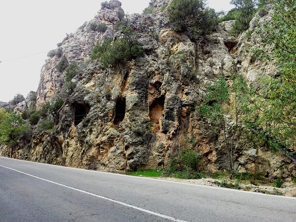
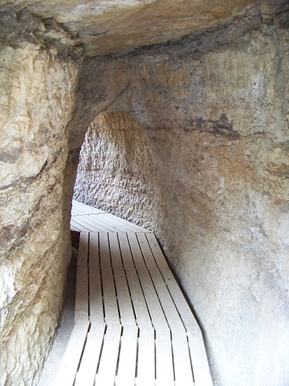
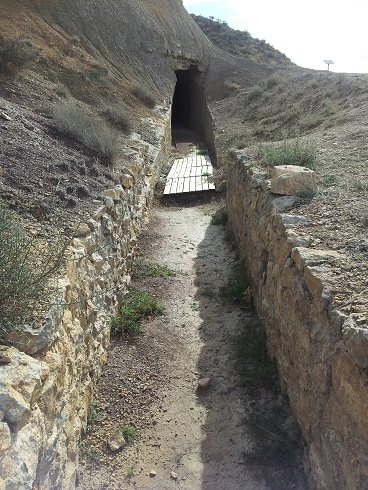
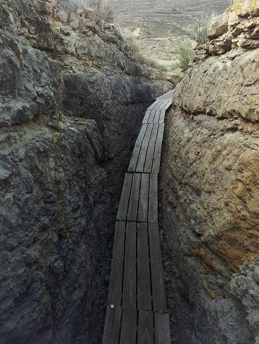
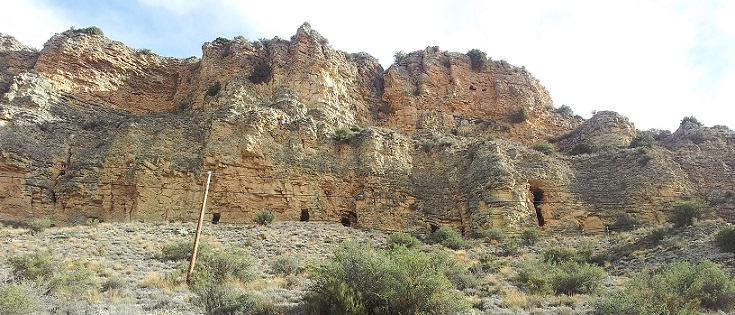
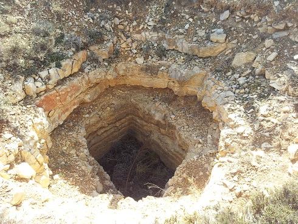

Acueducto romano Albarracín-Gea-Cella
El acueducto de Albarracín-Cella está datado en el siglo I, y abastecía la ciudad romana que se ubicaba en la actual Cella, a unos 25km.
Tramo I Azud del Albergue de Albarracín.
Tramo II Galería de los Espejos y Túnel próximo al castillo de Santa Croche.
|
 |
 |
Tramo III Azud de Gea de Albarracín.
|
 |
 |
 |
Tramo IV Barranco de los Burros.

Tramo V Cañada de Monterde y Las Hoyas.
Tramo VI La Tejería.

Tramo VII Las Eras de Cella.
Tramo VIII Casco urbano de Cella.
Más info: http://www.centroacueductoromanogea.com